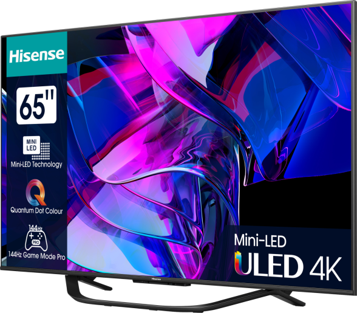

A LED-háttérvilágítású LCD-televíziók (a Samsung Electronics ezeket nevezi LED TV-nek) a hagyományos LCD-televíziókban használt fluoreszcens fények helyett LED háttérvilágítást alkalmaznak. A LED TV-ket a Samsung vezette be, és jelenleg ez a legnépszerűbb TV-technológia. Manapság szinte kizárólag ilyen technológiájú TV-készülékeket forgalmaznak a kereskedelemben, a szintén nagy képernyős, ultravékony, megjelenésekor ugyancsak hatalmas újításnak számító plazma TV-ket is nagyjából háttérbe szorította.

A LED-eknek két fajtáját használják a LED-televíziókban: vagy dinamikus RGB LED-eket helyeznek el közvetlenül a képernyő mögé, vagy fehér oldalvilágítású Edge LED-eket építenek be a képernyő széleibe, amelyek egy egyedi fényelosztó panel segítségével világítják be a teljes képernyőt.
A digitális megjelenítés lehetővé tette, hogy egy régi ötlet, a sztereoszkópikus 3D filmek, újjászülethessenek. Hannah Montana és Miley Cyrus, az amerikai Super Bowl hétvégét nyitó Best of Both Worlds nevű koncertje kasszasikert aratott 2008-ban, és újabban az Avatar lett az első $1 milliárd USD bevételt is meghaladó film. Mindkét alkotás 3D produkció.
A mozikban elért sikerek hatására a műsorgyártók és –szolgáltatók érdeklődésüket fejezték ki a saját sztereoszkópikus 3D szolgáltatásuk megvalósításában. 2010. október 1-jétől Európában először a brit Sky nevű műsorszolgáltató indította el lakossági előfizetők számára is elérhető Sky 3D csatornáját.
A hétköznapi fogyasztóknak szánt elektronikai termékek gyártói is örömmel tapasztalják, hogy a háromdimenziós televíziókészülékek piaca fellendülhet, a kezdeti magas érdeklődést követő egyre csekélyebb keresletű és nyomott árakkal jellemzett síkképernyők iránti igény újjászülethet. Jó néhány konzumer eszközöket gyártó cég támogat 3D tartalmat szolgáltató csatornákat világszerte.
A 3D otthoni megjelenítése mind technikai és kreatív szempontok miatt is különbözik a mozikban alkalmazottaktól.